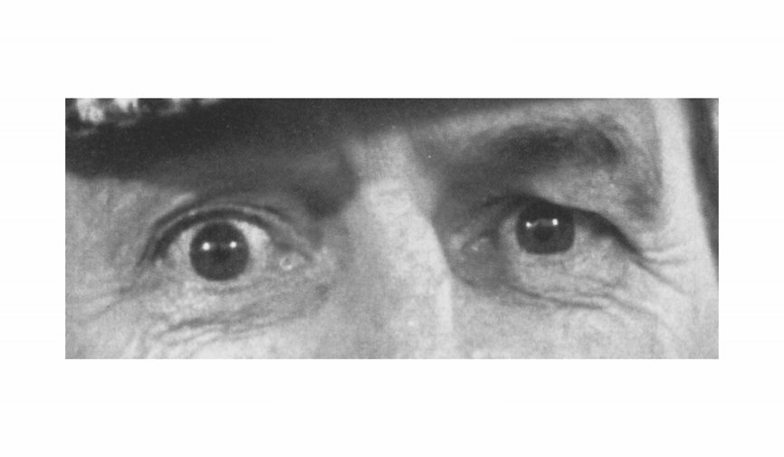

For each set of eyes, choose the word that best describes what the person in the picture is thinking or feeling. More than one word may seem to fit, but choose just one. Read all four words before you choose.

jealous · panicked · arrogant · hateful
For these eyes the answer is: panicked
Click a word to answer. If it is wrong, you can try another one. You have 15 seconds per photo and 2 minutes in total. Get as many right as you can.
Reading the Mind in the Eyes Test (Baron-Cohen et al., 2001), Autism Research Centre, University of Cambridge